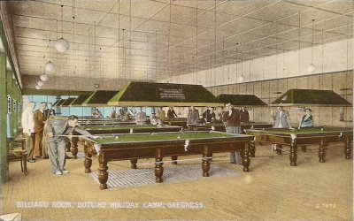
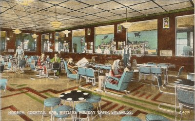
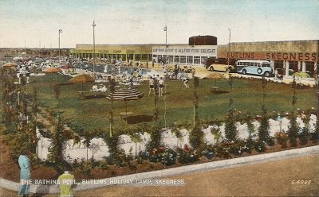
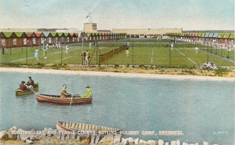

Ordinary Telegrapher AER Rowe
Rob Blackwell, 16 April 2006
When my Grandfather was posted to Skegness for training in 1941, he wrote to his Dad at Romford. Here is the text of the letter with some of the images from the Butlins letter card. I have tried to preserve grammatical errors and use of language; I think these are an indication of the pressure and uncertainty he would have been experiencing. For information, the 29th was a Saturday.
Uncle W is Uncle Will White married to Elizabeth who I think was Grandad Rowe's sister. The families were very close and used to stay with each other quite often I believe. They were spiritualists and took Dad to their meetings sometimes! [Janet Palmer]

O/TEL AER ROWE
JX 310177
TOP DIVISION
CLASS 137
HMS Royal Arthur
Skegness Lincs
29 November 1941
Dear Dad and all at Romford,
I expect you will be anxiously awaiting a line from me as you knew, of course, I was here last Tuesday. I hope you won't think me thoughtless in having delayed so long writing but I expect Dad will remember that the rookie has quite a lot to do + learn in his first few days + in addition, of course, I was summoned somewhat hurriedly + I've to put my affairs in order as best I can from here.
These views may give you some idea but only faint + not so colourful of the place I stay in. We live in chalets + have a good few comforts old soldiers would think but it's nothing like home.
I seem to do nothing but go on parade "at the double" all the time. My sailor suit is very tight as yet but twill stretch I'm told and it would be quite in order with a few more pockets. I haven't anywhere to put pipe, bacca + matches. I seem to get on fairly well so far - haven't been into trouble yet but have been interviewed by ???? Officer as have two other university men here with me in my class.
I expect I may hear about the RAF but I'm afraid there's little hope for the Air ?? will not ask for my release the Admiralty may release me if I'm not to far on in training They are quite fine chaps in my class and I shall enjoy myself here I have no doubt tho', of course I was disappointed at having to stay. I share a chalet with two others one an ex Palestine Police Constable the other a railway clerk. We've one other teacher here + also a man from Westcliffe. In addition two small boys of 12th West Ham who are here as P.T. instructors (They were of cub age when I last saw them) have both stopped me and spoken to me and we've had quite a chat - I think I've also sometime to interview the naval schoolmaster here. Well that's all for now my love to you all + remember I think about you quite a lot. Remember me to Auntie Liz + Uncle W when you see them also Hilda when you write - I have to do so much kit arranging + boot cleaning etc + running to parade I've little time for letter writing. I had Vaccination and inoculation yesterday + my arm has been very stiff - Had shore leave today + went into Skeg. We have an Ensa concert tonight.
Love to you all your affectionate son and brother, Arthur.
P.S. Expect to be here about five weeks.
P.S. II If Ada has time could and would she knit me a pair of gloves and perhaps a scarf. I'll square her for the wool. Please. And would you mention this to Maud. It has been cold here.
